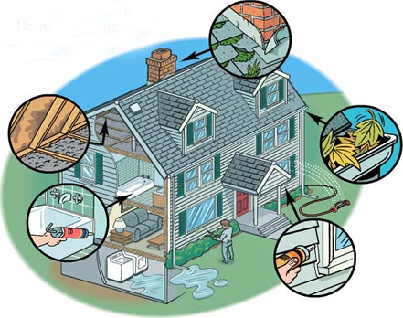
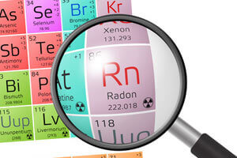
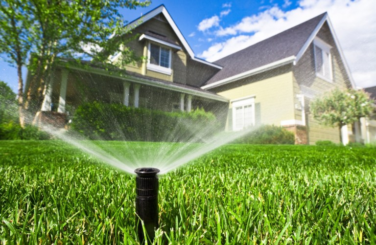

Services
Our home inspection company offers a range of services that include the following:
Flexible Scheduling
Our flexable schedule allows us to work around a time that's right for you.
Home Maintenance Inspections

Property Listing Inspections (Buy or Seller Inspections)
If you have any questions or issues with property listings, we offer property listing inspections for a full report on any home you are interested in buying or selling. We will inspect each area of the listing, and provide you with the proper details regarding repairs, maintenance work, and more.
Radon Testing
Home Inspections LLC offers certified radon testing to ensure you and your family are safe from the radioactive, natural gas. This is highly recommended if you are moving into a new home.
New Construction Inspection

If you are in the process of building your home, it is crucial you make time for comprehensive inspections to ensure everything is on the right track. The inspection should be scheduled a day or two before your final walk through with the Builder. This timetable will ensure that most, if not all, last minute items have been completed prior to the inspection.
Sprinklers
We offer sprinkler system inspections for an additional fee during the months of April-October (or when the sprinklers are on and it isn't too cold).We turn on each sprinkler zone manually using the control panel and then check for leaks, sprinklers not functioning properly, and sprinklers that may be spraying the house or not covering areas of the lawn.
A typical inspection will be about 2-4 hours, depending on the size of the home or property. As always, you are welcome to join the inspection and ask any questions you might have along the way! After the initial inspection, we will provide you with an easy-to-read detailed report with all of our notes and what you need to keep an eye out for on the property or in the home, with details on:
- The condition of every major component, from the roof to the basement
- Major and minor deficiencies
- Any major expenditures necessary
- Helpful home preservation tips
- Safety concerns
- And much more!
We take pride in our work, striving for the most accurate and thorough inspections in north central Utah. To request any of our services and to set up an appointment with us, give Positive Grade Home Inspections LLC a call today!